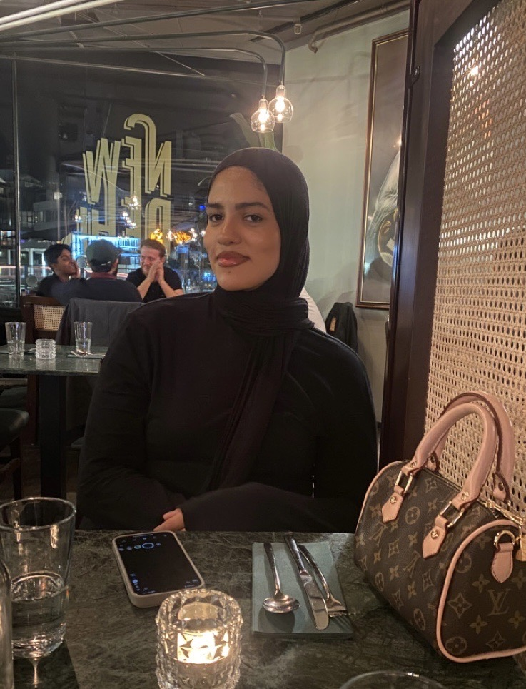

Jeg overvåker Ruters digitale tjenester i sanntid og bygger systemer som faktisk brukes, fra KI-verktøy for Rambøll til React-dashboard presentert på nasjonal konferanse.

Oslo, Norge
+47 45 91 38 21
hibanabih1209@hotmail.com
Utdanning
Bachelor i Informasjonsteknologi
OsloMet (2023-2026)
IT-student og Service Operations Engineer hos Tet Digital, der jeg overvåker Ruters digitale tjenester i sanntid og jobber med skybaserte løsninger og automatisering. Gjennom studiet har jeg bygget systemer som faktisk brukes, fra et React-dashboard presentert på nasjonal konferanse til et KI-støttet verktøy for Rambøll som jeg nå utvikler for å estimere CO₂-utslipp fra jernbane-BIM
Jeg trives i krysningspunktet mellom teknologi og mennesker, enten det er i kode, i klasserommet eller i samarbeid med fageksperter. Fullfører bachelor i informasjonsteknologi ved OsloMet juni 2026.
Overvåker Ruters digitale tjenester i sanntid og oppdager feil proaktivt før de påvirker de reisende. Analyserer og koordinerer løsning av driftsavvik på tvers av team. Bidrar til automatisering av manuelle oppgaver gjennom koding og skybaserte løsninger. Bruker moderne observability-prinsipper for teknisk problemløsning i et produksjonsmiljø.
Har helhetlig ansvar for egen klasse i IT1, fra planlegging og gjennomføring til vurdering og oppfølging. Underviser i HTML, CSS og JavaScript; elevene bygger dynamiske nettsider fra bunnen av. Veileder elever i prosjektbasert læring med kritisk refleksjon rundt teknologi og samfunn. Gir konstruktiv vurdering, følger opp enkeltelever og forbereder til eksamen.
Utvikler KI-støttet verktøy for automatisert mengdeuttak og CO₂- og kostnadsestimat fra IFC-modeller (BIM). Bygger Python-pipeline med IfcOpenShell for uttak av volum, areal og lengde fra jernbane-IFC, spesifikt for spor med ballast, sviller og skinnehauger. Implementerer lettvekts ML-klassifikator for mapping av objekter til materialkategori og klimafaktor. Utvikler React-dashboard med what-if-glidere for scenario-sammenligning av materialer, tverrsnitt og CO₂- og kostnad. Auto-genererer PDF-beslutningsnotat tilpasset kundedialog i tidligfase, med Docker for reproduserbar kjøring.
Planlegger og gjennomfører kodeverksteder for barn med micro:bit, Scratch og MakeCode. Gjør programmering tilgjengelig og morsomt, tilpasser opplæringen til barnas nivå og tempo. Veileder barn i å bygge egne interaktive prosjekter og spill fra bunnen av.
Ledet utviklingen av en fullstack-løsning for å redusere ventetid på reserverte bøker. Bygget frontend i React med TypeScript og backend i Express.js. Adresserte et reelt behov i virksomheten med brukerorientert tilnærming. Resultatet var karakter A og invitasjon til å presentere løsningen for Axiells kunder på konferanse.
Veiledet studenter i tre sentrale IT-emner over ett studieår, med fokus på å bygge bro mellom teori og praktisk anvendelse.
Rettet obligatoriske innleveringer, ga konstruktive tilbakemeldinger og forberedte studenter til eksamen. Bidro til et trygt læringsmiljø der studenter turte å stille spørsmål.
Tilkallingsvikar september 2023 til juni 2025, deretter fast deltidsstilling fra august 2025. Ansvar for barns daglige omsorg og aktiviteter i samarbeid med pedagogisk personale.
Automatisert mengdeuttak og CO₂- og kostnadsestimat fra IFC-modeller (BIM) med ML-klassifikasjon og React-dashboard med what-if-glidere.
Rollebasert avtalesystem for eldre, helsepersonell og admin med tre separate dashboard. REST API med JWT-autentisering, CRUD for avtaler og tilgjengelighetskalender.
Implementerte pålitelig filoverføring over UDP med Go-Back-N sliding window-protokoll. Håndterer pakketap, pakke-discard og tilkoblingshåndtering (SYN/ACK/FIN) fra bunnen av.
Android-app som lærer barn addisjon gjennom interaktive quiz med tilfeldig rekkefølge og unike oppgaver. Flerspråklig støtte via strings.xml, brukerpreferanser lagret i SharedPreferences.
OsloMet, storbyuniversitetet | 2023 – 2026
Min utdanning kombinerer teori med praktisk anvendelse på tvers av sentrale områder innen datateknologi. Jeg har opparbeidet meg praktisk erfaring gjennom programmering, apputvikling, webapplikasjoner og webprogrammering. I tillegg har jeg utviklet en solid forståelse for infrastruktur gjennom operativsystemer, datanettverk, skytjenester, samt algoritmer og datastrukturer. Emner som datasikkerhet, systemutvikling og menneske-maskin-interaksjon har gitt meg en brukersentrert og strukturert tilnærming til programvareutvikling.
Nydalen videregående skole | 2019 – 2022
Min videregående utdanning ga meg et solid fundament i matematikk og realfag. Jeg fordypet meg i matematikk og biologi, noe som gav meg en strukturert tilnærming til problemløsning, analytisk tenkning og kvantitativ analyse. Denne bakgrunnen har vært uvurderlig i IT-studiene, spesielt innen områder som algoritmer, diskret matematikk og datadrevet utvikling.
Studentparlamentet, OsloMet
OsloMet
Backend · Frontend · Fullstack · AI/ML · DevOps · Sky · Nettverk · Embedded
Jeg trives i alle deler av utviklerrollen, fra kode og arkitektur til drift og automatisering.
Har du en rolle som passer? Ta gjerne kontakt.